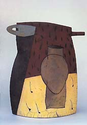
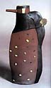
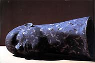
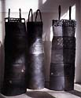
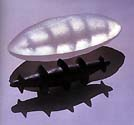

| Daphne Corregan
Artist's profile by Françoise de l'Epine.
Daphne
Corregan takes pleasure in distracting objects away from their original
function by distorting and stretching them to impossible dimensions
in order to magnify them and make them playful. Ceramist and sculptor,
her forms originate on paper. It is these drawings which will determine
the technique she will need to create them.
Born in 1954 in Pittsburgh, PA, USA, Corregan now lives in the
south of France. Her time is divided between her studio and her
job teaching sculpture and ceramics at the Ecole d'Arts Plastiques
in Monaco. Corregan came to France at a young age and began her
studies in art at the Beaux Arts in Toulon, Marseilles, and finally
in Aix-en-Provence in 1977. Her first contacts with clay took place
during her American schooling but her initiation to raku came later
while studying ceramics with Jean Biagini in Aix. Jim Romberg's
and Paul Soldner's visits were a revelation. "Jim used his
slips and glazes like a painter uses his paints," she recalled.
The different stages of firing and postfiring reduction, the coordination
of gestures and the complicity of the artist with fire fascinated
her.
Corregan prefers to use a white raku clay with a talc content
because of the soft yet almost metallic patinas she obtains with
a strong smoking after firing. She uses one glaze and one engobe,
each made up of gerstley borate, kaolin and silica, colored with
oxides or stains, following no precise formula, used as such or
mixed together depending on the degree of glossiness she might be
searching for. She spends a great deal of time painting each piece,
following the outlines of her drawings previously incised into the
clay when it is still wet. One might speak of it more as coloring
rather than glazing. She takes into account the fact that these
engravings or incisions will become a rich black after smoking the
work and in that way be reinforced and accentuated. "What particularly
interests me," says Corregan, "is the transformation the
clay surfaces and richness of tones obtained by smoking. The clay
takes on a grey or black color and becomes a background for a
more pictorial work. Whether I decide to cover I my work with decoration,
or simply engrave or fill in my drawings with solid colors, or perhaps
superimpose brushstrokes of a different quality of glaze and color,
the smoking of the piece following firing tends to bind these different
surface treatments to the body of the piece itself and therefore
may be considered more as the skin of the work rather than its clothing."
Corregan works more on the representation of the object than on
the object itself. She wants to demonstrate that a pot for example,
by removing it from its daily context may be just as important as
a sculpture or painting. She will flatten it, exaggerate its size
or even highlight only one of its details. She uses diverse materials
such as clay, metal, glass or bronze. She works in series and in
what we might classify into three families: destructured
pots; geometric volumes; and sculpture/objects, often anthropomorphic.


Daphne Corregan lives intensely. In art and day-to-day life, she
is impulsive. She enjoys the art of everyday life, and its objects.
She is willingly influenced by clay architecture, seen during her
trips to the southwest of America and to Africa, by Italian and
Egyptian frescoes, by Etruscan tombs, street graffiti, contemporary
dance, and by artists she admires, such as Picasso, Miro, Matisse,
Tapies, Dejonghe, Penicaud, Twombly, Viallat and many others. The
freedom and whimsy of Picasso's ceramics have always attracted and
amused her. For the decoration of some of her pitchers, the idea
of
collage or pattern painting may be used but she wants the decoration
to become a part of the piece and not too strong as to distract
the eye. Their forms are relatively simple. Incisions, sorts of
scarifications delimit the zones where the clay will be left alone
or covered with glaze or slips; other pieces will be simply smoked,
and here, the miracle always renewed by flame will, on Corregan's
pitchers, bring to our imagination evocations of birds or animals.
Their decoration is two-sided; they often are composed of two slabs
joined together at the sides and some almost take on an air of a
penguin or a striped rabbit, while others have strange beaks and
ears. Is this a distant memory of Kachina dolls or Oceanic sculptures?
Affected by the atrocities that have occurred in the past few
years, in particular in the former Yugoslavia and in Rwanda, Corregan
felt the need to create figurative sculptures. Her first figures
had arms that actually were arms, then they became victims, marked
by scars, but always remained standing. Her wheeled chariots might
symbolize humanity forced to exodus, and the 'limbs' as if set in
a gangue, a little like those of Giacometti, are a way, for Corregan,
of reacting to land mines. For her recent vases, measuring up to
110 cm tall, Corregan had the idea of making them with bases. These
bases may take the shape of a shelf-forming body with the vase or
pitcher itself
and hung on a wall, or a pedestal from where the vase will emerge.
Some
of these vases were designed to carry flowers, the flowers acting
as a prolongation of the vase itself and thus completing its form.
This series is the continuation of her work on the mold and imprint
but is also reminiscent of an earlier series on the mortar and pestle
begun in 1994-96 after her first trip to Burkina Faso. Corregan
is constantly leading us to new directions. This time, she is working
on dresses, full-length strapped dresses, some with apertures, another
with a smocked waist. They stand alone. The heavily-smoked clay
gives them sumptuous hues of blacks and grays: "There is such
an enormous variety of blacks... matt blacks, silent, that absorb
light... more metallic ones, full of reflections and nocturnal connotations,
slightly sophisticated and mischievous." Here and there some
inlaid porcelain or a touch of glaze accentuates the richness of
hues. With these dresses (145 cm/high) she excels in what is her
approach: the desire to see her clay become alive, to become just
as vibrant as when it was still full of water, and to catch the
light in the same manner as when she modeled her pieces. In order
to achieve this she will not cover the clay with a layer of glaze
nor disrupt it with a strong texture: "I can't imagine covering
this work with another skin other than the clay itself or in any
case with only a little. And I believe that it is precisely this
'little' that attracted me to raku."
Parallel
to these dresses she is also working on enormous cylinders, a continuation
of her research on inside/outside also illustrated by her heads.
She plans on decorating the 'inside' with a repetitive design and
those subtle matt glazes of hers, leaving the outside to be only
blackened by smoke. Daphne Corregan starts with objects from everyday
life whose beauty comes from the forms dictated by the needs of
the human body and not by an intellectual research, preconceived.
Corregan's originality is to penetrate into the interior of the
given object in order to move around it, creating a new dynamic,
and to transform it through drawing into something more playful.
One is struck by her great freedom in the way of expressing forms.
It radiates energy, pleasure and humor. What tends to unify this
work is without a doubt the warm and sensual way she has of drawing
and painting. Miro said that "a work should fertilize the imagination".
It is this spirit that Corregan's open forms call out to us.
Daphne's work can be seen at the Galerie Marianne Brand in Carouge,
Switzerland, until 18 June 2004. On the 13 June, Daphne and her
husband Gilles Suffren will host an 'artists dialogue' at the ceramics
studios of Carouge/Fondation Bruckner.
Françoise de l'Epine is a writer on the
arts, living in Paris. Article courtesy Daphen Corregan. ©
More Articles
Raku links
|
{kind=link}
{kind=link}
{kind=link}
{kind=link}
{kind=link}